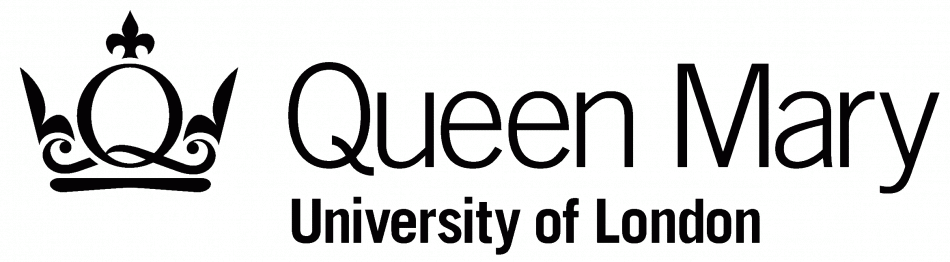

{% extends "base.html" %}
{% block page %}
{{ name }}, thanks for your participation!
Your participant serial number is: {{ serial_no }}
Thanks for offering your contact details.
Your email: {{ email }}
Your note: {{ note }}
You will receive an email in a few days. If you have further questions, please feel free to contact me at lele.liu@se13.qmul.ac.uk with your name and participant serial number.
For More Information
You can visit Queen Mary's privacy notice for research participants for important information about your personal data and your rights in this respect.
If you have any questions or concerns about the manner in which the study was conducted please, in the first instance, please contact me at lele.liu@se13.qmul.ac.uk.
If this is unsuccessful, or not appropriate, please contact the Secretary at the Queen Mary Ethics of Research Committee, Room W104, Queens’ Building, Mile End Campus, Mile End Road, London, E1 4NS or research-ethics@qmul.ac.uk.
If you have any questions relating to data protection, please contact Data Protection Officer, Queens’ Building, Mile End Road, London, E1 4NS or data-protection@qmul.ac.uk

{% endblock %}